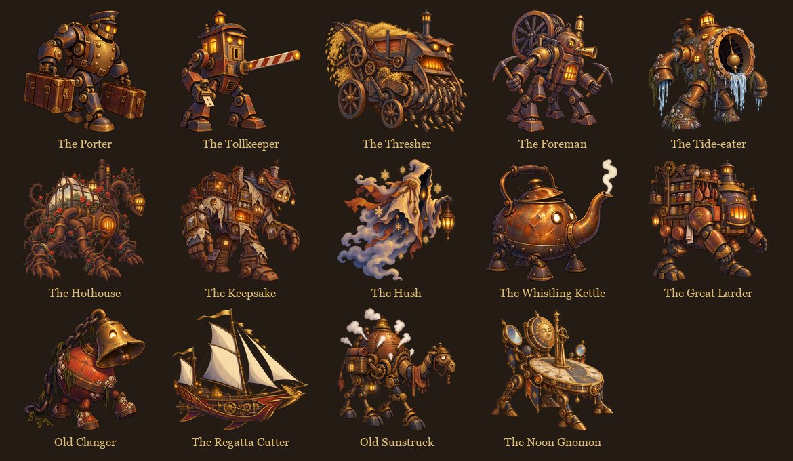

Bosses and hunts
Every boss and optional hunt so far, with stats, weaknesses, moves and the pattern each one follows.
On this page
Warning This page names every boss and hunt in the game so far and what they do. Skip it until you reach them.
Bosses are fights you cannot run from. Hunts are optional named Rust at the end of a clue chain (see Hunts). All figures are base stats: the game scales them with your difficulty setting and tunes bosses well above the base. Most players lose their first attempt unless they have trained a little first. See Training and difficulty.
Summary
| Boss or hunt | HP | Attack | Defence | Mind | Speed | XP | Marks | Weak to | Resists |
|---|---|---|---|---|---|---|---|---|---|
| The Porter (boss) | 900 | 19 | 9 | 14 | 12 | 120 | 80 | Spark | none |
| The Tollkeeper (boss) | 2600 | 46 | 17 | 41 | 13 | 520 | 300 | Spark | Tide |
| The Thresher (boss) | 1400 | 40 | 12 | 33 | 12 | 260 | 160 | Tide | none |
| The Foreman (boss) | 6200 | 74 | 22 | 65 | 14 | 900 | 450 | Frost | Spark |
| The Tide-eater (boss) | 8400 | 82 | 24 | 74 | 15 | 1500 | 700 | Spark | Tide |
| The Hothouse (boss) | 15000 | 110 | 28 | 102 | 16 | 2200 | 900 | Frost | Spark |
| The Keepsake (boss) | 16000 | 128 | 30 | 120 | 17 | 3200 | 1200 | Spark | Frost |
| The Hush (boss) | 20000 | 150 | 32 | 144 | 18 | 3800 | 1400 | Spark | none |
| The Hush, Returned (boss) | 24000 | 225 | 36 | 214 | 19 | 4600 | 1700 | Spark, Frost | none |
| The Stilling Engine (boss) | 30000 | 182 | 38 | 174 | 21 | 7000 | 3000 | Spark, Tide | Gear |
| The Whistling Kettle (hunt) | 32000 | 305 | 40 | 290 | 25 | 3000 | 900 | Frost, Tide | Gear |
| The Great Larder (boss) | 33500 | 201 | 41 | 193 | 21 | 7800 | 3300 | Tide, Frost | Gear |
| Old Clanger (hunt) | 34000 | 325 | 42 | 308 | 26 | 3300 | 960 | Spark, Gale | Tide |
| The Regatta Cutter (boss) | 36500 | 218 | 44 | 209 | 23 | 8600 | 3700 | Gale, Spark | Tide |
| Old Sunstruck (hunt) | 34000 | 330 | 42 | 310 | 26 | 3200 | 950 | Frost, Tide | Spark |
| The Noon Gnomon (boss) | 36500 | 218 | 45 | 210 | 22 | 8600 | 3600 | Frost, Tide | Spark |
| The Runaway Cake (hunt) | 37000 | 345 | 44 | 325 | 27 | 3500 | 1000 | Tide, Gale | Frost |
| The Wedding Bells (boss) | 38700 | 228 | 47 | 220 | 23 | 9300 | 3900 | Spark, Gale | Frost |
Details
The Porter (boss)
Wicklow Halt's old clockwork luggage porter, taken by the Rust. It still carries the station's escapement.
- Base stats: HP 900, Attack 19, Defence 9, Mind 14, Speed 12. Reward: 120 XP, 80 Marks.
- Weak to: Spark. Resists: none.
- Moves: Trunk Swing (power 1.25); Heavy Trunk (power 2.3, BIG); Rust Whistle (power 0.7 (Mind), hits the whole party, 50% Rusting (3 turns), BIG); Check Tickets (power 0.6, pushes its target back in the turn order).
- Fixed pattern (then it repeats): Trunk Swing, Check Tickets, Heavy Trunk, Trunk Swing, Rust Whistle, Trunk Swing, Check Tickets, Heavy Trunk..
- Drops: Wind Draught 100%.
- Found in: The Old Cutting.
The Tollkeeper (boss)
The bridge's great toll machine, taken by the Rust.
- Base stats: HP 2600, Attack 46, Defence 17, Mind 41, Speed 13. Reward: 520 XP, 300 Marks.
- Weak to: Spark. Resists: Tide.
- Moves: Toll Bar (power 1.3); Exact Change (power 0.75 (Mind), hits the whole party, 60% Slowed (3 turns)); Gate Slam (power 2.4, BIG); No Entry (power 0.6, 80% Seized (1 turn)); Rush Hour (power 1, hits the whole party, BIG); Wind the Gate (power 0, speeds itself up).
- Fixed pattern (then it repeats): Toll Bar, Exact Change, Gate Slam, Toll Bar, No Entry, Wind the Gate, Rush Hour, Toll Bar, Exact Change, Gate Slam, No Entry, Toll Bar, Rush Hour..
- Drops: Wind Draught 100%.
- Found in: Tollbridge.
The Thresher (boss)
The windmill's great threshing machine, taken by the Rust. It keeps threshing the same empty floor.
- Base stats: HP 1400, Attack 40, Defence 12, Mind 33, Speed 12. Reward: 260 XP, 160 Marks.
- Weak to: Tide. Resists: none.
- Moves: Flail (power 1.3); Threshing Storm (power 1, hits the whole party, BIG); Chaff Cloud (power 0.4 (Mind), hits the whole party, 60% Dazed (2 turns)); Grind Stone (power 2.4, BIG); Wind Up (power 0, speeds itself up).
- Fixed pattern (then it repeats): Flail, Chaff Cloud, Wind Up, Threshing Storm, Flail, Grind Stone, Flail, Chaff Cloud, Threshing Storm, Wind Up, Grind Stone..
- Drops: Wind Draught 100%.
- Found in: The Windmill.
The Foreman (boss)
The Underway's great winding engine, taken by the Rust. It still calls the shifts, though nobody comes to work.
- Base stats: HP 6200, Attack 74, Defence 22, Mind 65, Speed 14. Reward: 900 XP, 450 Marks.
- Weak to: Frost. Resists: Spark.
- Moves: Pick Strike (power 1.3); Shift Whistle (power 0.45 (Mind), hits the whole party, pushes its target back in the turn order); Cave-in (power 1.1, hits the whole party, BIG); Hot Rivets (power 0.9 (Mind), 70% Rusting (3 turns)); Overtime (power 0, speeds itself up); Tally Up (power 2.5, BIG).
- Fixed pattern (then it repeats): Pick Strike, Shift Whistle, Hot Rivets, Pick Strike, Overtime, Cave-in, Pick Strike, Tally Up, Shift Whistle, Pick Strike, Hot Rivets, Cave-in, Tally Up..
- Drops: Wind Draught 100%.
- Found in: The Deep Workings.
The Tide-eater (boss)
The great sluice pump of the Sunken Quarter, taken by the Rust. It swallowed the tide clock's pendulum.
- Base stats: HP 8400, Attack 82, Defence 24, Mind 74, Speed 15. Reward: 1500 XP, 700 Marks.
- Weak to: Spark. Resists: Tide.
- Moves: Bite (power 1.3); Undertow (power 0.6 (Mind), hits the whole party, 60% Slowed (3 turns)); Breaker (power 1.15, hits the whole party, BIG); Brine Spray (power 0.9 (Mind), 70% Rusting (3 turns)); Swallow the Tide (power 0, speeds itself up); Riptide (power 0.7, pushes its target back in the turn order); Maelstrom (power 2.6, BIG).
- Fixed pattern (then it repeats): Bite, Undertow, Brine Spray, Bite, Swallow the Tide, Breaker, Riptide, Bite, Maelstrom, Undertow, Bite, Brine Spray, Breaker, Maelstrom..
- Drops: Wind Draught 100%.
- Found in: The Sunken Quarter.
The Hothouse (boss)
The great glasshouse's heating engine, taken by the Rust.
- Base stats: HP 15000, Attack 110, Defence 28, Mind 102, Speed 16. Reward: 2200 XP, 900 Marks.
- Weak to: Frost. Resists: Spark.
- Moves: Thorn Lash (power 1.3); Heatwave (power 0.7 (Mind), hits the whole party, 40% Dazed (2 turns)); Overgrowth (power 0.6 (Mind), hits the whole party, 35% Seized (1 turn)); Hot Pipes (power 0.9 (Mind), 70% Rusting (3 turns)); Bloom (power 0, speeds itself up); Glass Rain (power 1.15, hits the whole party, BIG); Endless Summer (power 2.6, BIG).
- Fixed pattern (then it repeats): Thorn Lash, Heatwave, Hot Pipes, Thorn Lash, Bloom, Glass Rain, Overgrowth, Thorn Lash, Endless Summer, Heatwave, Thorn Lash, Hot Pipes, Glass Rain, Endless Summer..
- Drops: Wind Draught 100%.
- Found in: The Great Glasshouse.
The Keepsake (boss)
A house grown out of rust, with every room of one home kept exactly as it was.
- Base stats: HP 16000, Attack 128, Defence 30, Mind 120, Speed 17. Reward: 3200 XP, 1200 Marks.
- Weak to: Spark. Resists: Frost.
- Moves: Slam the Door (power 1.3); Old Wallpaper (power 0.7 (Mind), hits the whole party, 40% Dazed (2 turns)); Hold Still (power 0.6 (Mind), hits the whole party, 35% Seized (1 turn)); Cold Hearth (power 0.9 (Mind), 70% Rusting (3 turns)); Keep (power 0, speeds itself up); Every Room at Once (power 1.15, hits the whole party, BIG); Remember (power 2.7, BIG).
- Fixed pattern (then it repeats): Slam the Door, Old Wallpaper, Cold Hearth, Slam the Door, Keep, Every Room at Once, Hold Still, Slam the Door, Remember, Old Wallpaper, Slam the Door, Cold Hearth, Every Room at Once, Remember..
- Drops: Wind Draught 100%.
- Found in: The Venns' House.
The Hush (boss)
The Stillwright's guardian, a walking fog. Where it passes, sound stops.
- Base stats: HP 20000, Attack 150, Defence 32, Mind 144, Speed 18. Reward: 3800 XP, 1400 Marks.
- Weak to: Spark. Resists: none.
- Moves: Smother (power 1.3); Fogbank (power 0.7 (Mind), hits the whole party, 50% Dazed (2 turns)); Stillness (power 0.6 (Mind), hits the whole party, 35% Seized (1 turn)); Muffle (power 0.8, pushes its target back in the turn order); Gather (power 0, speeds itself up); Silence (power 1.15, hits the whole party, BIG); Not a Sound (power 2.7, BIG).
- Fixed pattern (then it repeats): Smother, Fogbank, Muffle, Smother, Gather, Silence, Stillness, Smother, Not a Sound, Fogbank, Smother, Muffle, Silence, Not a Sound..
- Drops: Wind Draught 100%.
- Found in: The High Moor.
The Hush, Returned (boss)
The Hush, back at the foundry, where it has taken in the foundry's heat. It hits much harder than before.
- Base stats: HP 24000, Attack 225, Defence 36, Mind 214, Speed 19. Reward: 4600 XP, 1700 Marks.
- Weak to: Spark, Frost. Resists: none.
- Moves: Smother (power 1.3); Fogbank (power 0.7 (Mind), hits the whole party, 50% Dazed (2 turns)); Stillness (power 0.6 (Mind), hits the whole party, 35% Seized (1 turn)); Cinder Hush (power 0.9 (Mind), 70% Rusting (3 turns)); Gather (power 0, speeds itself up); Silence (power 1.15, hits the whole party, BIG); Not a Sound (power 2.7, BIG).
- Fixed pattern (then it repeats): Smother, Fogbank, Cinder Hush, Smother, Gather, Silence, Stillness, Smother, Not a Sound, Fogbank, Smother, Cinder Hush, Silence, Not a Sound..
- Drops: Wind Draught 100%.
- Found in: The Foundry.
The Stilling Engine (boss)
Aldous Venn's great machine, a clock that tries to stop every other clock.
- Base stats: HP 30000, Attack 182, Defence 38, Mind 174, Speed 21. Reward: 7000 XP, 3000 Marks.
- Weak to: Spark, Tide. Resists: Gear.
- Moves: Piston (power 1.3); Still the Hands (power 0.6 (Mind), hits the whole party, 35% Seized (1 turn)); Slow Hour (power 0.7 (Mind), hits the whole party, 60% Slowed (2 turns)); Cold Boiler (power 0.9 (Mind), 70% Rusting (3 turns)); Wind Down (power 0, speeds itself up); Everything at Rest (power 1.15, hits the whole party, BIG); The Last Stroke (power 2.6, BIG).
- Fixed pattern (then it repeats): Piston, Slow Hour, Cold Boiler, Piston, Wind Down, Everything at Rest, Still the Hands, Piston, The Last Stroke, Slow Hour, Piston, Cold Boiler, Everything at Rest, The Last Stroke..
- Drops: Wind Draught 100%.
- Found in: The Hour Clock.
The Whistling Kettle (hunt)
A great copper kettle that has been coming to the boil for thirty years. Its whistle stops you in your tracks, and Frost takes the steam out of it.
- Base stats: HP 32000, Attack 305, Defence 40, Mind 290, Speed 25. Reward: 3000 XP, 900 Marks.
- Weak to: Frost, Tide. Resists: Gear.
- Moves: Steam Jab (power 1.3); Scald (power 0.7 (Mind), hits the whole party, 50% Slowed (2 turns)); Whistle (power 0.6 (Mind), hits the whole party, 35% Seized (1 turn)); Cold Spout (power 0.9 (Mind), 70% Rusting (3 turns)); Come to the Boil (power 0, speeds itself up); Boil Over (power 1.15, hits the whole party, BIG); Pressure Release (power 2.5, BIG).
- Fixed pattern (then it repeats): Steam Jab, Whistle, Cold Spout, Steam Jab, Come to the Boil, Boil Over, Scald, Steam Jab, Pressure Release, Whistle, Steam Jab, Cold Spout, Boil Over, Pressure Release..
- Drops: Lake Tonic 100%.
- Found in: The Rolling Downs.
The Great Larder (boss)
A pantry the size of a barn with an oven at its centre, built to keep the supper coming.
- Base stats: HP 33500, Attack 201, Defence 41, Mind 193, Speed 21. Reward: 7800 XP, 3300 Marks.
- Weak to: Tide, Frost. Resists: Gear.
- Moves: Rolling Pin (power 1.3); Gravy Boat (power 0.7 (Mind), hits the whole party, 60% Slowed (2 turns)); Slam the Larder Door (power 0.6 (Mind), hits the whole party, 35% Seized (1 turn)); Overdone (power 0.9 (Mind), 70% Rusting (3 turns)); Second Helping (power 0, speeds itself up); Everything Out of the Oven (power 1.15, hits the whole party, BIG); The Last Course (power 2.6, BIG).
- Fixed pattern (then it repeats): Rolling Pin, Slam the Larder Door, Overdone, Rolling Pin, Second Helping, Everything Out of the Oven, Gravy Boat, Rolling Pin, The Last Course, Slam the Larder Door, Rolling Pin, Overdone, Everything Out of the Oven, The Last Course..
- Drops: Wind Draught 100%.
- Found in: The Pudding Cellar.
Old Clanger (hunt)
A bell-buoy the size of a haystack that has been tolling the start bell for thirty years. Spark rattles it and Tide runs off it.
- Base stats: HP 34000, Attack 325, Defence 42, Mind 308, Speed 26. Reward: 3300 XP, 960 Marks.
- Weak to: Spark, Gale. Resists: Tide.
- Moves: Clang (power 1.3); Toll (power 0.7 (Mind), hits the whole party, 50% Slowed (2 turns)); Ringing Ears (power 0.6 (Mind), hits the whole party, 35% Seized (1 turn)); Salt Spray (power 0.9 (Mind), 70% Rusting (3 turns)); Pick Up the Rhythm (power 0, speeds itself up); Storm Peal (power 1.15, hits the whole party, BIG); Last Bell (power 2.5, BIG).
- Fixed pattern (then it repeats): Clang, Ringing Ears, Salt Spray, Clang, Pick Up the Rhythm, Storm Peal, Toll, Clang, Last Bell, Ringing Ears, Clang, Salt Spray, Storm Peal, Last Bell..
- Drops: Lake Tonic 100%.
- Found in: Brindle Quay.
The Regatta Cutter (boss)
The pride of Brindle Quay: a racing cutter built to win, with a clockwork heart and sails full of the last gust of a thirty-year-old morning.
- Base stats: HP 36500, Attack 218, Defence 44, Mind 209, Speed 23. Reward: 8600 XP, 3700 Marks.
- Weak to: Gale, Spark. Resists: Tide.
- Moves: Bow Ram (power 1.3); Wake (power 0.7 (Mind), hits the whole party, 60% Slowed (2 turns)); Starting Gun (power 0.6 (Mind), hits the whole party, 35% Seized (1 turn)); Salt Spray (power 0.9 (Mind), 70% Rusting (3 turns)); Full Sail (power 0, speeds itself up); Broadside (power 1.15, hits the whole party, BIG); Photo Finish (power 2.6, BIG).
- Fixed pattern (then it repeats): Bow Ram, Starting Gun, Salt Spray, Bow Ram, Full Sail, Broadside, Wake, Bow Ram, Photo Finish, Starting Gun, Bow Ram, Salt Spray, Broadside, Photo Finish..
- Drops: Wind Draught 100%.
- Found in: The Regatta Course.
Old Sunstruck (hunt)
A clockwork camel with a boiler in its hump, walking in circles looking for shade. Frost and Tide take the heat out of it.
- Base stats: HP 34000, Attack 330, Defence 42, Mind 310, Speed 26. Reward: 3200 XP, 950 Marks.
- Weak to: Frost, Tide. Resists: Spark.
- Moves: Hump Bump (power 1.3); Heat Haze (power 0.7 (Mind), hits the whole party, 50% Dazed (2 turns)); Sulk (power 0.6 (Mind), hits the whole party, 35% Seized (1 turn)); Spit (power 0.9 (Mind), 70% Rusting (3 turns)); Trot (power 0, speeds itself up); Boiler Burst (power 1.15, hits the whole party, BIG); Hump Slam (power 2.5, BIG).
- Fixed pattern (then it repeats): Hump Bump, Sulk, Spit, Hump Bump, Trot, Boiler Burst, Heat Haze, Hump Bump, Hump Slam, Sulk, Hump Bump, Spit, Boiler Burst, Hump Slam..
- Drops: Shade Tea 100%.
- Found in: Saltglass Fair.
The Noon Gnomon (boss)
A sundial the size of a windmill, with a shadow-pole like a mast, built a hundred years ago to tell the time. It has been telling 'noon' ever since.
- Base stats: HP 36500, Attack 218, Defence 45, Mind 210, Speed 22. Reward: 8600 XP, 3600 Marks.
- Weak to: Frost, Tide. Resists: Spark.
- Moves: Shadow Pole (power 1.3); Glare (power 0.7 (Mind), hits the whole party, 60% Dazed (2 turns)); Noon Stands Still (power 0.6 (Mind), hits the whole party, 35% Seized (1 turn)); Heat Haze (power 0.9 (Mind), 70% Rusting (3 turns)); Hold the Hour (power 0, speeds itself up); High Noon Beam (power 1.15, hits the whole party, BIG); The Longest Shadow (power 2.6, BIG).
- Fixed pattern (then it repeats): Shadow Pole, Noon Stands Still, Heat Haze, Shadow Pole, Hold the Hour, High Noon Beam, Glare, Shadow Pole, The Longest Shadow, Noon Stands Still, Shadow Pole, Heat Haze, High Noon Beam, The Longest Shadow..
- Drops: Wind Draught 100%.
- Found in: The Noon Gnomon.
The Runaway Cake (hunt)
A clockwork wedding cake, five tiers high, that rolled out of the baker's kitchen thirty years ago on brass casters and has been dodging the knife ever since. Tide melts the icing and Gale blows the sugar off.
- Base stats: HP 37000, Attack 345, Defence 44, Mind 325, Speed 27. Reward: 3500 XP, 1000 Marks.
- Weak to: Tide, Gale. Resists: Frost.
- Moves: Tier Slam (power 1.3); Sugar Storm (power 0.7 (Mind), hits the whole party, 50% Dazed (2 turns)); Marzipan Cling (power 0.6 (Mind), hits the whole party, 35% Seized (1 turn)); Jam Spit (power 0.9 (Mind), 70% Rusting (3 turns)); Roll Away (power 0, speeds itself up); Icing Barrage (power 1.15, hits the whole party, BIG); Top Tier Topple (power 2.5, BIG).
- Fixed pattern (then it repeats): Tier Slam, Marzipan Cling, Jam Spit, Tier Slam, Roll Away, Icing Barrage, Sugar Storm, Tier Slam, Top Tier Topple, Marzipan Cling, Tier Slam, Jam Spit, Icing Barrage, Top Tier Topple..
- Drops: Mulled Cider 100%.
- Found in: The Lantern Fields.
The Wedding Bells (boss)
A peal of bell-machines on a great brass frame in the chapel belfry, with a ringing-master's clockwork in the middle. Built to ring the bride in.
- Base stats: HP 38700, Attack 228, Defence 47, Mind 220, Speed 23. Reward: 9300 XP, 3900 Marks.
- Weak to: Spark, Gale. Resists: Frost.
- Moves: Clapper Swing (power 1.3); Wedding Toll (power 0.7 (Mind), hits the whole party, 35% Seized (1 turn)); Discord (power 0.7 (Mind), hits the whole party, 60% Dazed (2 turns)); Rice Rain (power 0.9 (Mind), 70% Rusting (3 turns)); Ring the Changes (power 0, speeds itself up); Full Peal (power 1.15, hits the whole party, BIG); Here Comes the Bride (power 2.6, BIG).
- Fixed pattern (then it repeats): Clapper Swing, Discord, Rice Rain, Clapper Swing, Ring the Changes, Full Peal, Wedding Toll, Clapper Swing, Here Comes the Bride, Discord, Clapper Swing, Rice Rain, Full Peal, Here Comes the Bride..
- Drops: Wind Draught 100%.
- Found in: The Chapel at Candlewick.